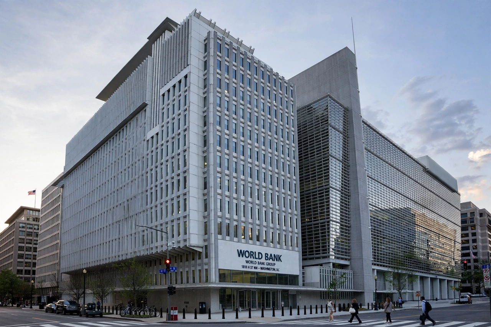

Investor-state dispute settlement (ISDS) is a system through which foreign investors may sue a host state for alleged violations of protections owed to them under an international investment agreement, such as a bilateral investment treaty or the investment chapter of a free trade agreement. Claims are heard by ad hoc arbitral tribunals rather than national courts, and typically allege expropriation without compensation, denial of "fair and equitable treatment", or discrimination. Awards are enforceable worldwide under the ICSID Convention or the New York Convention.
ISDS clauses appear in roughly 3,000 investment treaties. The treaties grant investors substantive protections — against expropriation, and under standards such as fair and equitable treatment, most-favoured-nation and national treatment — and the host state's standing offer to arbitrate, which the investor accepts by filing a claim. Most cases are administered by the International Centre for Settlement of Investment Disputes (ICSID), part of the World Bank Group; others proceed under UNCITRAL or institutional rules.
A tribunal usually consists of three arbitrators, one appointed by each party and a president agreed jointly. Proceedings are frequently confidential, though transparency has increased under newer treaties and the UNCITRAL transparency rules. The tribunal's award is final: ICSID awards can be annulled only on narrow grounds by an ad hoc committee, and non-ICSID awards reviewed only at the seat of arbitration. Compensation is monetary; tribunals cannot order a state to change its law, though large awards — sometimes billions of dollars — exert obvious pressure.
Well-known claims include tobacco company challenges to plain-packaging laws in Australia and Uruguay (both ultimately unsuccessful), Vattenfall v. Germany over the nuclear phase-out, Metalclad v. Mexico over a blocked landfill, and the Yukos awards against Russia, the largest in arbitration history. Cases against Argentina after its 2001 crisis made it the most frequent respondent state.
Critics argue ISDS privileges foreign investors over domestic firms, deters legitimate regulation ("regulatory chill"), and entrusts public questions to private arbitrators with inconsistent outcomes and no appeal. Defenders respond that it depoliticises disputes, encourages investment in countries with weak courts, and merely enforces commitments states voluntarily made. Reform efforts range from the EU's proposed standing Investment Court System, adopted in treaties such as CETA, to treaty terminations by states including Bolivia, Ecuador, Venezuela, South Africa and Indonesia, and UNCITRAL Working Group III's multilateral reform process.
See also: New York Convention, Arbitral award, Bilateral investment treaty, Litigation.